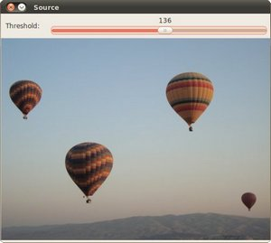

Creating Bounding boxes and circles for contours
Goal
In this tutorial you will learn how to:
- Use the OpenCV function cv::boundingRect
- Use the OpenCV function cv::minEnclosingCircle
Theory
Code
This tutorial code’s is shown lines below. You can also download it from here
#include "opencv2/imgcodecs.hpp" #include "opencv2/highgui.hpp" #include "opencv2/imgproc.hpp" #include <iostream> using namespace cv; using namespace std; Mat src; Mat src_gray; int thresh = 100; int max_thresh = 255; RNG rng(12345); void thresh_callback(int, void* ); int main( int, char** argv ) { src = imread( argv[1], IMREAD_COLOR ); cvtColor( src, src_gray, COLOR_BGR2GRAY ); blur( src_gray, src_gray, Size(3,3) ); const char* source_window = "Source"; namedWindow( source_window, WINDOW_AUTOSIZE ); imshow( source_window, src ); createTrackbar( " Threshold:", "Source", &thresh, max_thresh, thresh_callback ); thresh_callback( 0, 0 ); waitKey(0); return(0); } void thresh_callback(int, void* ) { Mat threshold_output; vector<vector<Point> > contours; vector<Vec4i> hierarchy; threshold( src_gray, threshold_output, thresh, 255, THRESH_BINARY ); findContours( threshold_output, contours, hierarchy, RETR_TREE, CHAIN_APPROX_SIMPLE, Point(0, 0) ); vector<vector<Point> > contours_poly( contours.size() ); vector<Rect> boundRect( contours.size() ); vector<Point2f>center( contours.size() ); vector<float>radius( contours.size() ); for( size_t i = 0; i < contours.size(); i++ ) { approxPolyDP( Mat(contours[i]), contours_poly[i], 3, true ); boundRect[i] = boundingRect( Mat(contours_poly[i]) ); minEnclosingCircle( contours_poly[i], center[i], radius[i] ); } Mat drawing = Mat::zeros( threshold_output.size(), CV_8UC3 ); for( size_t i = 0; i< contours.size(); i++ ) { Scalar color = Scalar( rng.uniform(0, 255), rng.uniform(0,255), rng.uniform(0,255) ); drawContours( drawing, contours_poly, (int)i, color, 1, 8, vector<Vec4i>(), 0, Point() ); rectangle( drawing, boundRect[i].tl(), boundRect[i].br(), color, 2, 8, 0 ); circle( drawing, center[i], (int)radius[i], color, 2, 8, 0 ); } namedWindow( "Contours", WINDOW_AUTOSIZE ); imshow( "Contours", drawing ); }
Explanation
The main function is rather simple, as follows from the comments we do the following:
Open the image, convert it into grayscale and blur it to get rid of the noise.
src = imread( argv[1], IMREAD_COLOR ); cvtColor( src, src_gray, COLOR_BGR2GRAY ); blur( src_gray, src_gray, Size(3,3) );
Create a window with header “Source” and display the source file in it.
const char* source_window = "Source"; namedWindow( source_window, WINDOW_AUTOSIZE ); imshow( source_window, src );
Create a trackbar on the source_window and assign a callback function to it In general callback functions are used to react to some kind of signal, in our case it’s trackbar’s state change.
createTrackbar( " Threshold:", "Source", &thresh, max_thresh, thresh_callback );
Explicit one-time call of
thresh_callbackis necessary to display the “Contours” window simultaniously with the “Source” window.thresh_callback( 0, 0 );
Wait for user to close the windows.
waitKey(0);
The callback function thresh_callback does all the interesting job.
Writes to
threshold_outputthe threshold of the grayscale picture (you can check out about thresholding here).threshold( src_gray, threshold_output, thresh, 255, THRESH_BINARY );
Finds contours and saves them to the vectors
contourandhierarchy.findContours( threshold_output, contours, hierarchy, RETR_TREE, CHAIN_APPROX_SIMPLE, Point(0, 0) );
For every found contour we now apply approximation to polygons with accuracy +-3 and stating that the curve must me closed.
After that we find a bounding rect for every polygon and save it to
boundRect.At last we find a minimum enclosing circle for every polygon and save it to
centerandradiusvectors.for( size_t i = 0; i < contours.size(); i++ ) { approxPolyDP( Mat(contours[i]), contours_poly[i], 3, true ); boundRect[i] = boundingRect( Mat(contours_poly[i]) ); minEnclosingCircle( contours_poly[i], center[i], radius[i] ); }
We found everything we need, all we have to do is to draw.
Create new Mat of unsigned 8-bit chars, filled with zeros. It will contain all the drawings we are going to make (rects and circles).
Mat drawing = Mat::zeros( threshold_output.size(), CV_8UC3 );
For every contour: pick a random color, draw the contour, the bounding rectangle and the minimal enclosing circle with it,
for( size_t i = 0; i< contours.size(); i++ ) { Scalar color = Scalar( rng.uniform(0, 255), rng.uniform(0,255), rng.uniform(0,255) ); drawContours( drawing, contours_poly, (int)i, color, 1, 8, vector<Vec4i>(), 0, Point() ); rectangle( drawing, boundRect[i].tl(), boundRect[i].br(), color, 2, 8, 0 ); circle( drawing, center[i], (int)radius[i], color, 2, 8, 0 ); }
Display the results: create a new window “Contours” and show everything we added to drawings on it.
namedWindow( "Contours", WINDOW_AUTOSIZE ); imshow( "Contours", drawing );
Result
Here it is:
